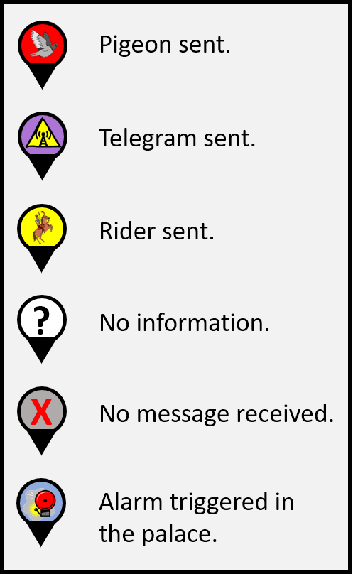

Below you see a list showing the icons for all the different events that can occur.

The first Icon signals that an emergency pigeon was sent out by a castle.
The second icon means that a telegram was sent out.
The third shows that a rider was sent out instead of a telegram (which, as you have learned, happens when an intermediate tower received a pigeon from a castle but could not send out a telegram).
The “?” icon means that it is unknown what happened at this location on the given day.
The “X” icon indicates cases where a message was not received (due to a pigeon having gotten lost, technical issues of a telegraph, or because a sent out rider went missing).
The last icon, the “alarm” icon, indicates that an incoming signal successfully triggered the alarm bell in the King’s Palace.